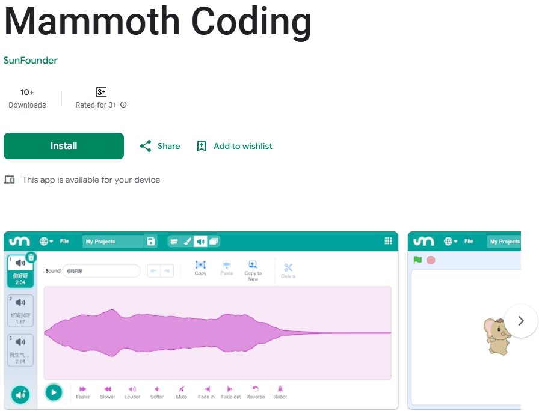
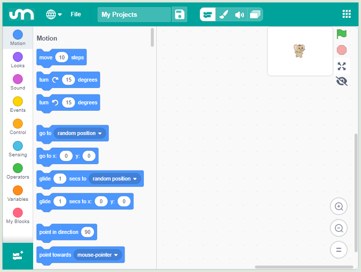
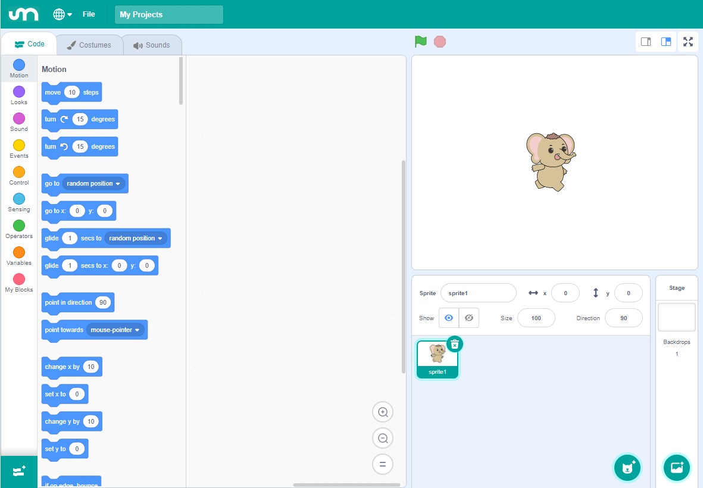
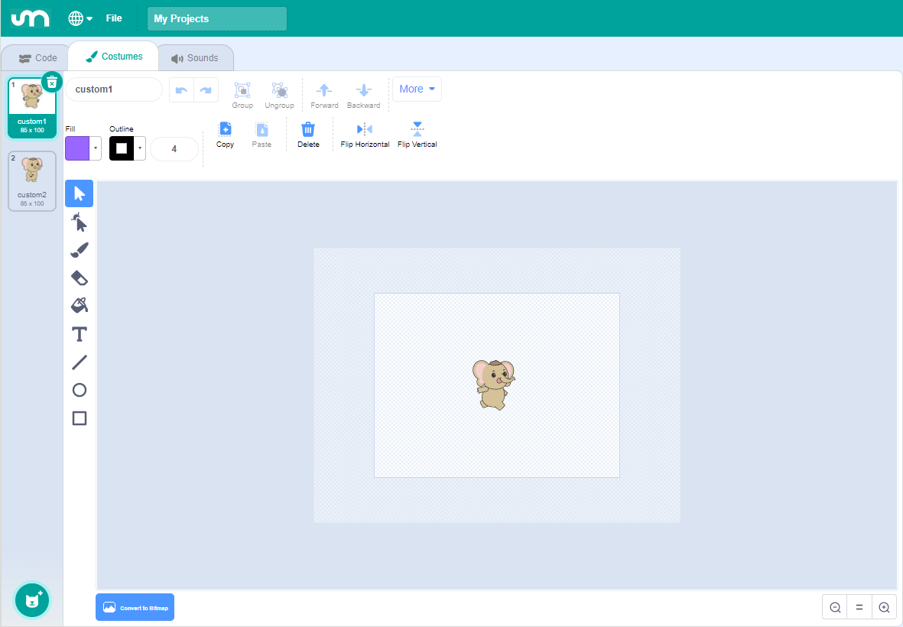
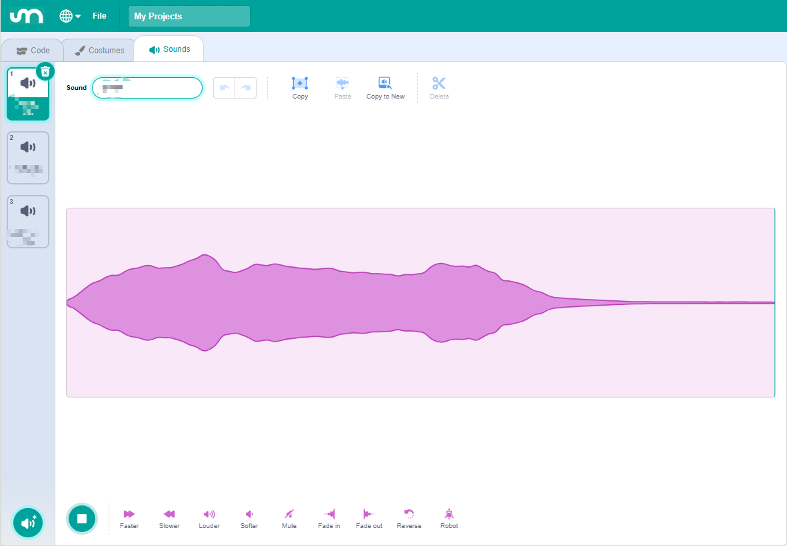
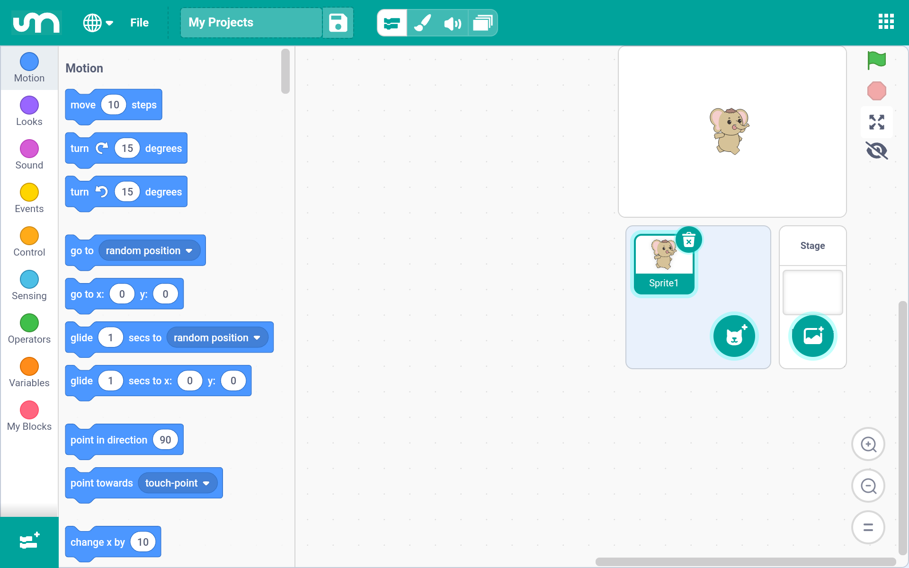
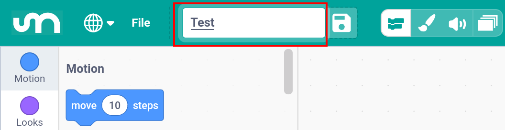
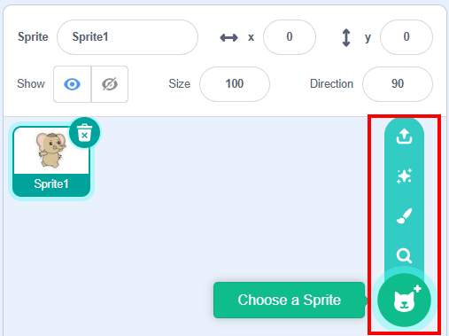
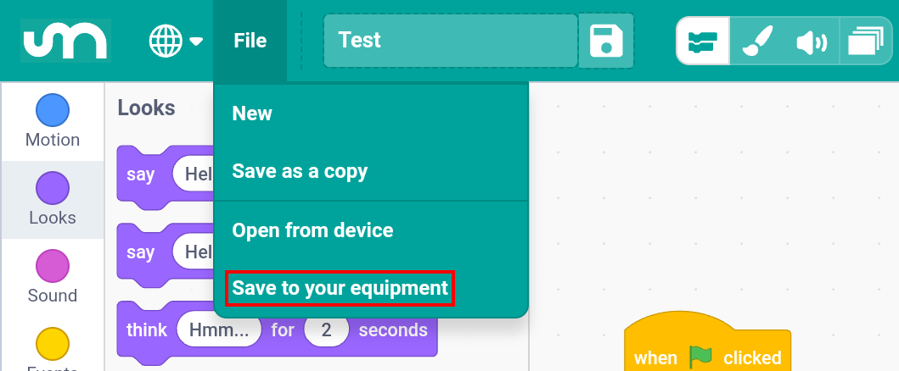

Note
Hello, welcome to the SunFounder Raspberry Pi & Arduino & ESP32 Enthusiasts Community on Facebook! Dive deeper into Raspberry Pi, Arduino, and ESP32 with fellow enthusiasts.
Why Join?
Expert Support: Solve post-sale issues and technical challenges with help from our community and team.
Learn & Share: Exchange tips and tutorials to enhance your skills.
Exclusive Previews: Get early access to new product announcements and sneak peeks.
Special Discounts: Enjoy exclusive discounts on our newest products.
Festive Promotions and Giveaways: Take part in giveaways and holiday promotions.
👉 Ready to explore and create with us? Click [here] and join today!
Lesson 2 Getting Started with the Mammoth Coding App
Let’s dive into the world of Mammoth Coding and create your first project! For an optimal experience, it’s recommended to use a device with a larger screen.
Learning Objectives
Set up the Mammoth Coding programming environment.
Understand basic programming concepts in Mammoth Coding.
Write and run your first program.
Installing the APP
Search for Mammoth Coding on Google Play or the Apple App Store and install it.

After installation, you can open it. Here’s what the interface looks like on larger screens:
For devices with smaller screens, the interface appears as follows:

{kind=link}
{kind=link}
{kind=link}
Understanding the APP
Mammoth Coding is designed to be fun, educational, and easy to learn. It provides tools for creating interactive stories, games, art, simulations, and more using block-based coding. It also includes built-in drawing and sound editors.
Top Section
The top section of Mammoth Coding includes several essential options.
Language Settings: The first option on the left allows you to choose different languages. Currently, English and Simplified Chinese are available.
File Menu: The second option is the File menu, where you can create new projects, open existing ones, and save your current project.
Project Name: The third option allows you to rename your project.
{kind=link}
Code Area
The Code page is where most of your programming activities will take place.
{kind=link}

Costumes
The Costumes page is used to edit sprites and backdrops, providing visual elements for your programs.
{kind=link}

Sounds
The Sounds page handles audio, providing multimedia elements for your programs.
{kind=link}

Creating Your First Program
1. Create or Open a Project
Each time you open the Mammoth Coding App, a new project is automatically created.

Change the default project name “My Project” to something meaningful.

You can also open a project that you’ve previously saved on your device.

{kind=link}
{kind=link}
2. Choose a Sprite
When you start a new project, a default sprite is provided. You can:
Use the default sprite.
Choose a new sprite from the library.
Draw your own sprite.
Upload a sprite from your device.

To choose a new sprite: Tap “Choose a Sprite” and select “GalaxyRVR”.

3. Write the Program
In the left sidebar, you’ll find various categorys containing different categories of blocks. You can drag blocks from these categorys into the scripting area to build your program.
For example, to make the GalaxyRVR sprite move forward 10 steps and then switch to the next costume when the green flag is clicked:
From the Events category, drag out the “When green flag clicked” block into the scripting area.
From the Motion category, drag out the “Move (10) steps” block and snap it below the event block.
From the Looks category, drag out the “Next costume” block and attach it below the motion block.
{kind=link}
{kind=link}
{kind=link}
4. Run the Program
There are two ways to run your program:
Simply tap on the stack of blocks you’ve assembled in the scripting area. A yellow highlight will appear, indicating the script is running.
If your script starts with the “When green flag clicked” block, you can click the green flag at the top left of the Stage to run your program. This is recommended for projects with multiple sprites or more complex code.
{kind=link}
{kind=link}
5. Save Your Project
After testing your code and ensuring everything works correctly, it’s important to save your project.
Click the save icon located to the right of your project’s name.
A “Project saved” message will appear. The project will be saved within the Mammoth Coding App. You can access your saved projects by clicking the menu button on the far right.
To share your code or save it to your device, click File > Save to your equipment, then choose an application to share with or save the project to your mobile device.

{kind=link}
{kind=link}
Congratulations!
You’ve successfully created and run your first program in Mammoth Coding. Keep experimenting and exploring to discover more features and unleash your creativity!